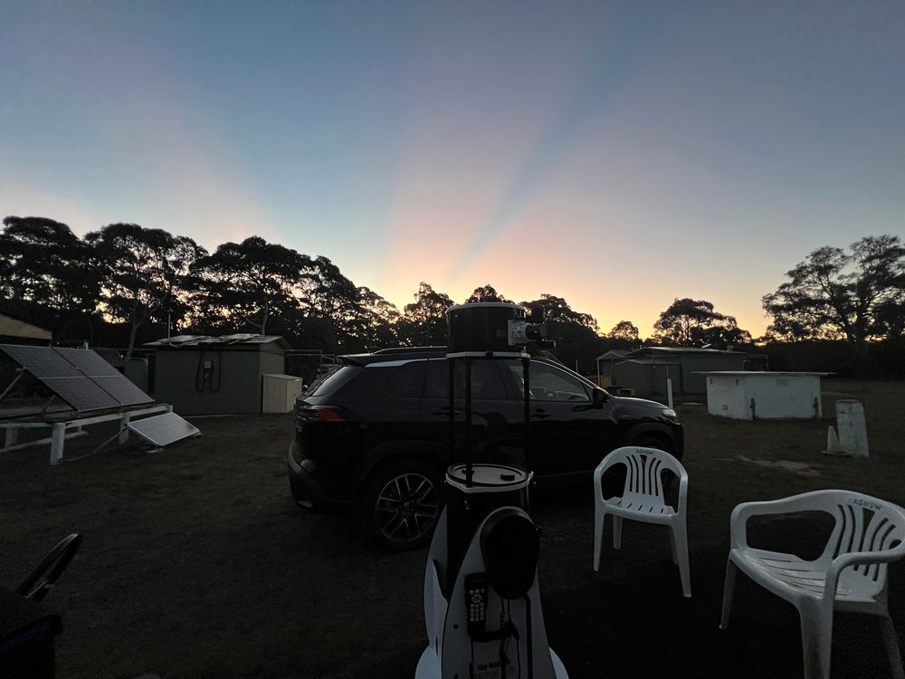
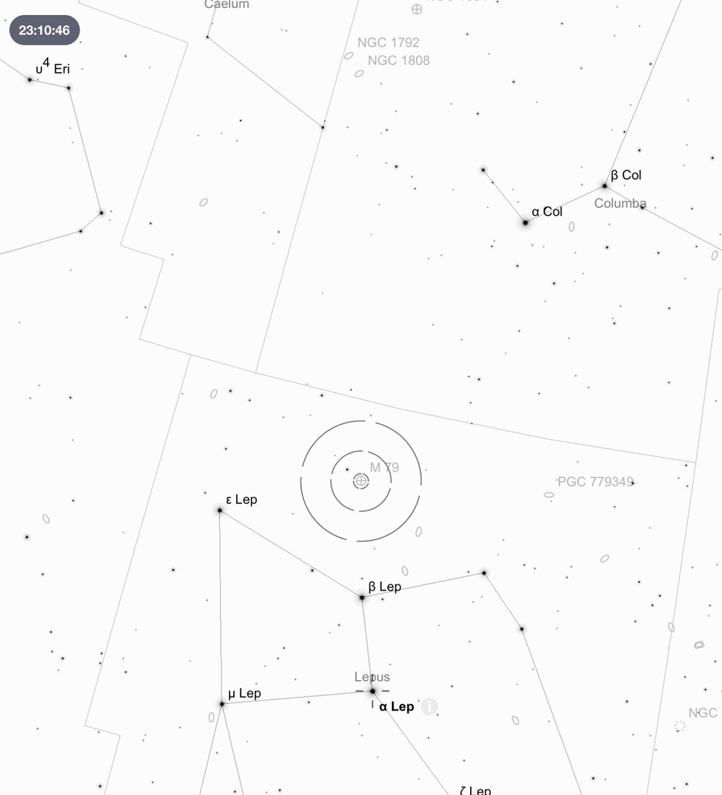
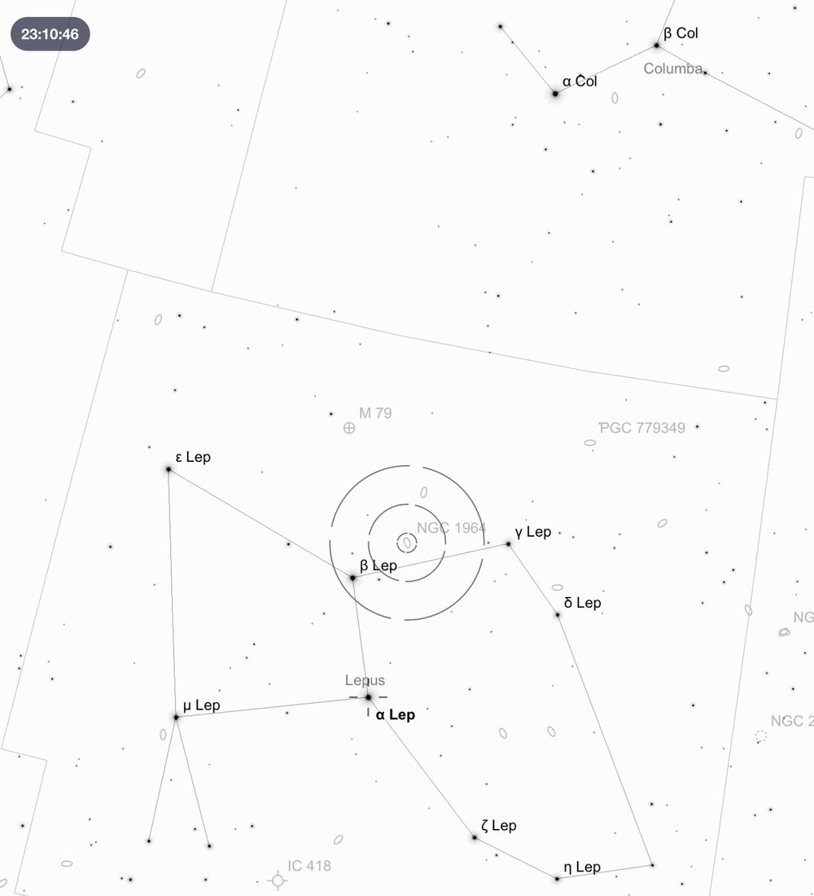
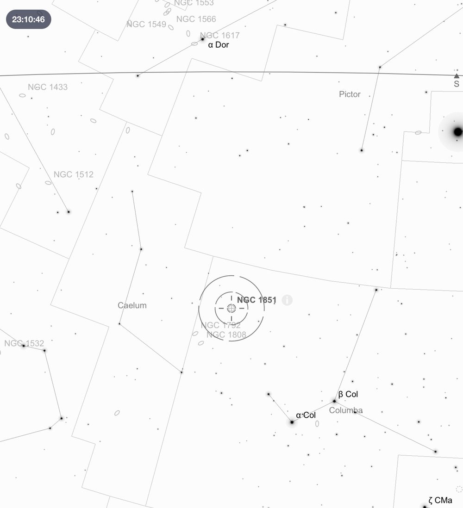
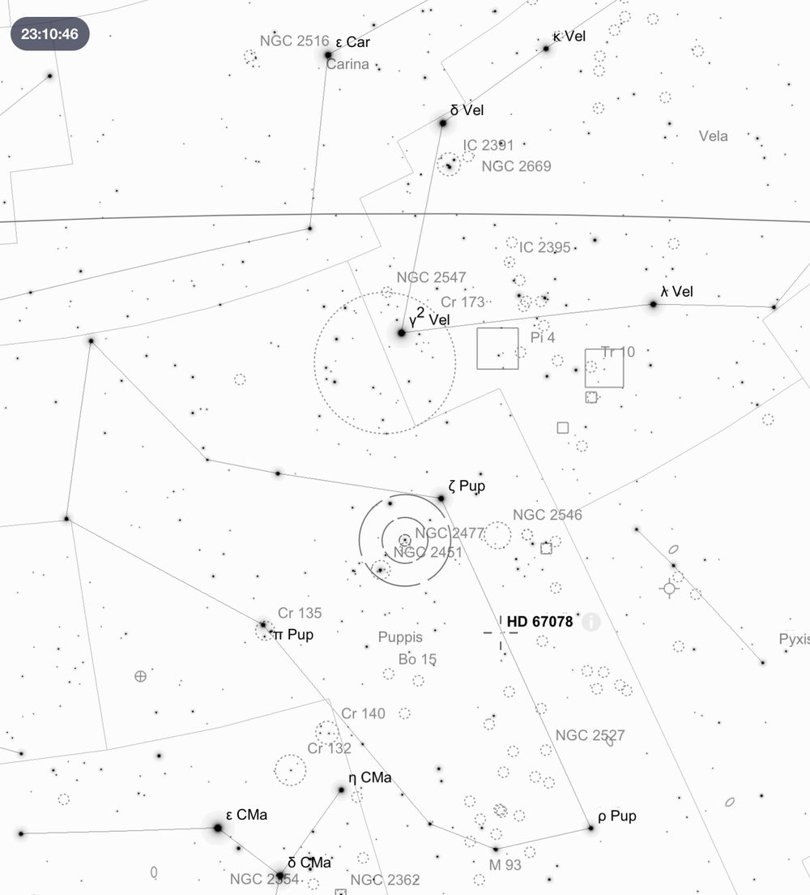
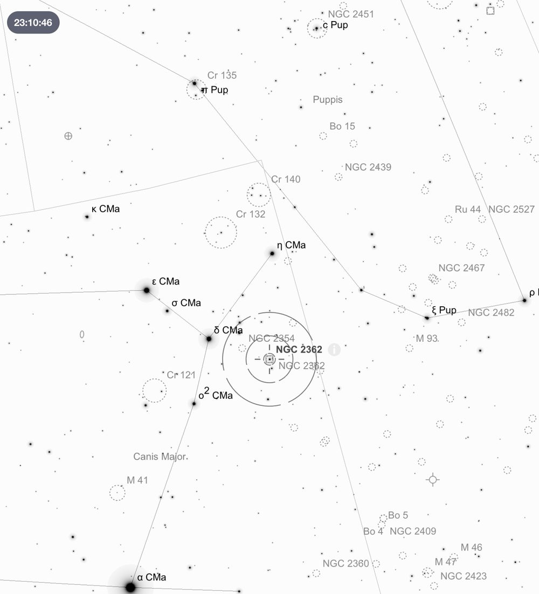
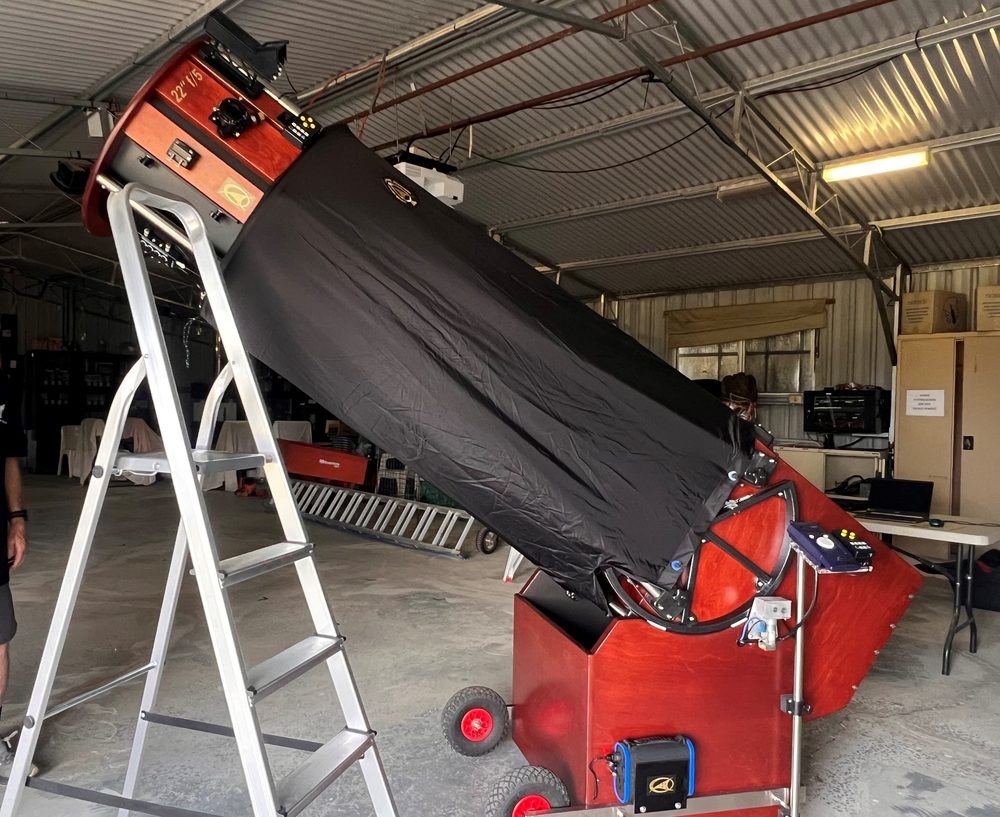

Deep Sky Notes — March 2026
Wiruna Wanderings

The forecast for the March Wiruna weekend did not look promising. We arrived on site early Friday afternoon to a pleasant partly cloudy sky to join another dozen or so members who had also ignored the weather forecast. I decided to tempt the wrath of the weather gods and set up my SkyWatcher dob on the main observing field. As the sun set the sky appeared to clear up, as I anxiously peered out from the kitchen. We were treated to a glorious Wiruna sunset (see Figure 1). The forecast was for the clear sky to disappear, so at the first sign of two alignment stars it was time to get the Dob up and running. After a couple of attempts, I got the alignment to the stage where the object was at least in the field of view (FOV) of my eyepiece. Not perfect, but at least it was clear.


With Orion and companions sinking into the western horizon, I started my search in the constellation of Lepus. This constellation is easy to pick as it is wedged conveniently in between Canis Major and the foot of Orion. I look for the distinctive shape formed by Lepus’s four main stars (-Leporis) forming a quadrilateral, with the two brightest, Arneb () at 2.6 and Nihal () at 2.8. The first object in Lepus was the globular cluster M79 (See Figure 2). Even without a Go-To scope it is relatively easy to find. Start by identifying the -Leporis (3.6 magnitude), -Leporis (2.8) and -Leporis (3.2) which form a flat triangle. M79 combines with -Leporis to create a rhombus pattern (see map-9 of The Cambridge Star Atlas by Tirion). Alternatively, draw a straight line through -Leporis and -Leporis and extend that line almost the same distance and it should place you within the vicinity of M79 which is easily picked up in the finderscope. With the 35mm eyepiece in, this ~8′ wide globular presents a bright 7th magnitude cluster with a dense unresolved core, with the brighter stars in the halo easily resolved. Switching to the 16mm eyepiece, with a bit of averted vision (AV) started to bring out a lot more detail in the surrounding halo of stars. An arc of bright stars (perhaps foreground stars) sits underneath, with a chain of brighter stars hanging off the bottom right like a loose jellyfish tentacle. When viewing this object keep in mind there is evidence that M79 was snatched from the Canis Major dwarf galaxy by tidal forces. A galactic neighbour cannibalised by our own Milky Way.
While I was in the vicinity, I noticed NGC 1964 a 10.8 magnitude edge-on spiral galaxy which sits only 1.7° away from -Leporis making it easy to locate (see Figure 3). This 5’ x 2’ edge-on galaxy is easy to pick out in the FOV. Its elongated disk is only interrupted by a bright knot or star in its core region. Images reveal a delicate spiral structure. Worth revisiting with the Club scope to see if the extra aperture can pick out any details.

From Lepus I drifted across to the constellation of Columba (the Dove). This small, faint constellation contains few bright stars making it trickier to identify. Columba is tucked in between the two brightest stars in the sky, Sirius and Canopus, and Lepus (see map-15 of The Cambridge Star Atlas). The only three stars I could confidently identify are -Columbae, (Phact) which sits at 2.6 magnitude and– Columbae (Wazn) at 3.1. With -Columbae (3.9 magnitude), this triplet forms an upside-down “L-shape”. Finding the point of intersection between a line through and -Columbae and another line drawn from Canopus, will put you within the vicinity of NGC 1851 (see Figure 4). It is easy to spot in the finderscope as a bright hazy patch. This 7.3 magnitude globular resolves very well with its compact core giving way to a uniform halo of stars approximately 4’ across. Interestingly, there is evidence that NGC 1851 is also a remnant of a dwarf galaxy or snatched from another galaxy.
To switch it up and destroy any dark adaptation I had, I decided to point the telescope at -2.3 magnitude Jupiter, which sat above the pair of Castor and Pollux in the constellation Gemini. The two main dark bands (North and South Equatorial Belts) jumped out immediately on either side of the equator, with tiers of additional fainter bands visible with a bit more probing. The rolling storm of the Great Red Spot was nowhere to be seen (it has a 10-hour planetary rotation). The four Jovian moons of Io, Europa, Callisto and Ganymede, all sat to the right of the planet’s disk, with the innermost moon (most likely Io) floating just above the limb of the planet’s disk. Revisiting Jupiter only an hour later, I was lucky enough to catch Io disappear behind the planetary disk. My first Jovian occultation was a great highlight for a night predicted to be cloudy and wet.

I next wandered into the constellation of Puppis, which represents the stern (poop deck) of the mythical ship Argo Navis. Last Wiruna weekend I had borrowed a book from the Club’s collection of library books, titled Southern Gems by Stephen O’Meara. Object 34 (page 134), was the open cluster NGC 2477. I decided to check it out and I was not disappointed. To find this open cluster, draw a line down the spine of Canis Major (through Sirius and δ-Canis Majoris), this points you towards the heart of Puppis (see map-15 of The Cambridge Star Atlas). Once within Puppis you can draw an imaginary line between – Puppis (Naos, the brightest star in Puppis) and –Puppis. Along this imaginary line sits the bright but sparse open cluster NGC 2451, and only 0.25° away lies NGC 2477 (See Figure 5). With a 35mm eyepiece in, this large 25’ wide cluster dominates the FOV with the field marked by the bright star b-Puppis to the bottom. This rich open cluster contains 100-200 stars arranged in waves of chains and arcs that give this cluster a charming appearance. Its uniform round shape and density make it more akin to the halo of a loose globular cluster sans core.

Continuing with open clusters, next I wandered onto NGC 2362 in Canis Major. This tightly compacted open cluster is distinguished by its brightest member -Canis Majoris which dominates the centre of the cluster. To hunt this cluster down is relatively easy, given its 4.4 magnitude -Canis Majoris is easily within naked eye range from a dark sky site. The finderscope can pick up -Canis Majoris but not much else. In the eyepiece is surrounded by a dense collection of 20-30 bright stars which make the cluster a real beauty. A relatively high-power eyepiece is needed to reveal a tight-knit collection of bright stars in an irregular pattern akin to something like the Jewel Box cluster. Putting NGC 2362 on the edge of the FOV of the 35mm eyepiece, allowed me to place the edge of NGC 2354 on the opposite side of the FOV. However, you will want to centre this cluster, to capture its entirety given its much larger, sparse nature. It is quite the contrast to have these two distinctly different clusters right next to each other.
By 11pm the wind had picked up, and the clouds started rolling in fast from the south-east. A thick layer of dew had drenched everything exposed. The dew-heater on my finderscope managed to keep up, whilst my unheated Telrad had no such luck. After trying to play tag with the odd sucker-hole, I decided to call it quits and retreated to the tent around midnight.

Saturday morning, we awoke to a crisp and cloudless blue sky with a tribe of magpies in residence around our tent. One of the joys of Wiruna is the abundant bird life (my favourite is the Black Cockatoos which congregate on the main observing field). Saturday involved two treats. First, was the next instalment of the Solstice communal dinner series: a delicious Mexican themed meal organised by Greg and Leigh with the 20 or so members and guests enjoying a feast. Second, was the delivery of the Club’s 22-inch dob (named “Lord Sidious”) from telescope builder Peter Read. I eagerly watched as the telescope was unpacked and put together. The weather gods sensing my excitement decided it was time for a thunderstorm. So although there was going to be no observing that night, we enjoyed a delicious Mexican dinner and sat comfortably around the fire in the Kitchen watching the Matildas play in the Asia Cup Final. Unfortunately, we had to pack up and head home Sunday morning, but I hope next month will bring some better weather.
Until next month. Clear skies.